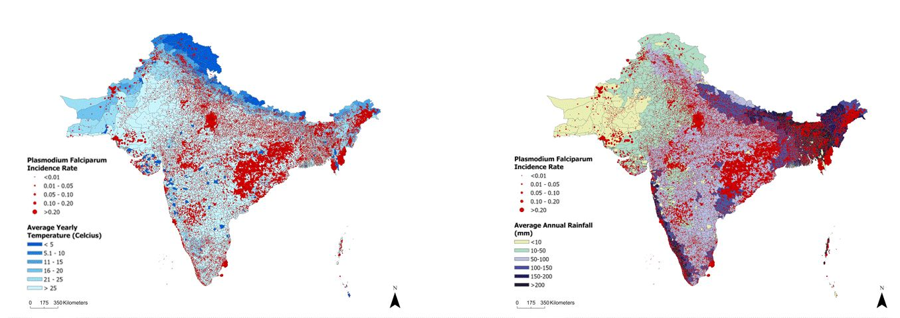
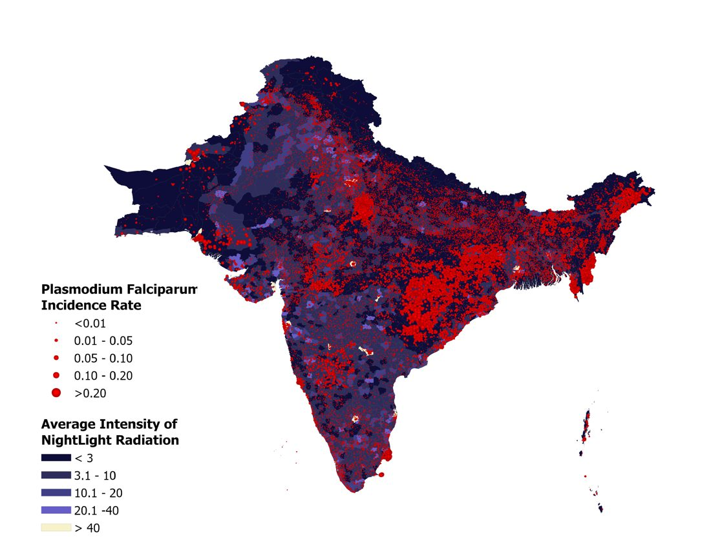
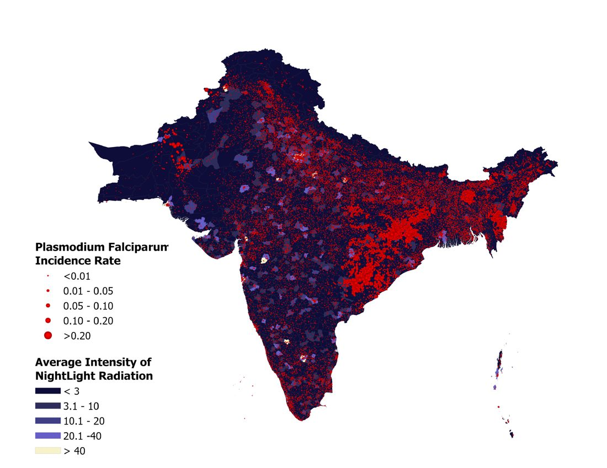
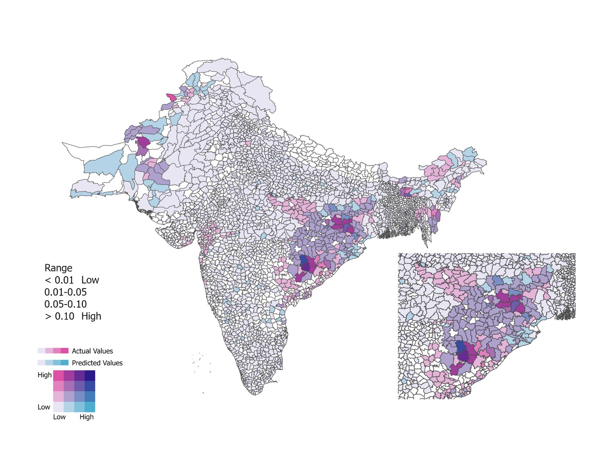
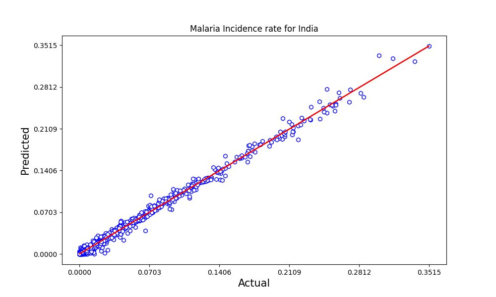
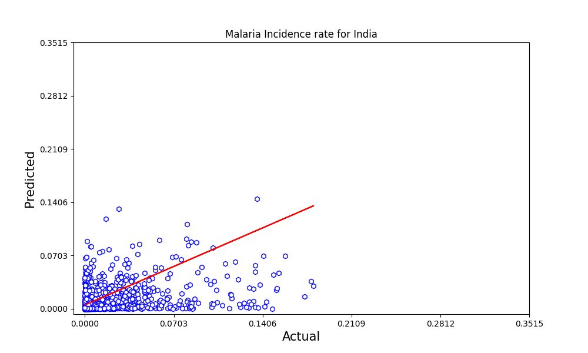
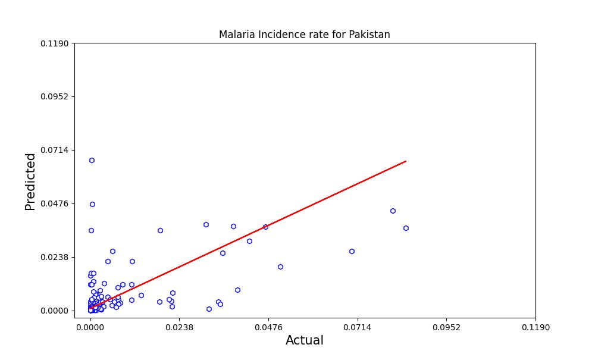
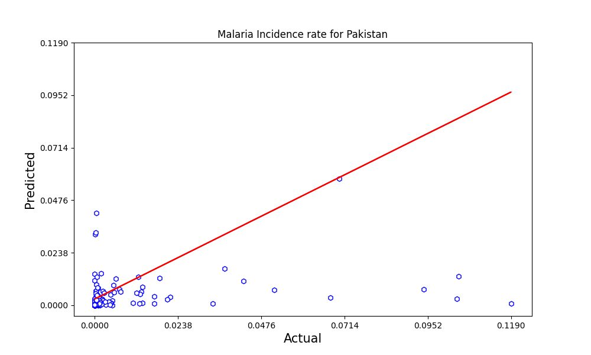
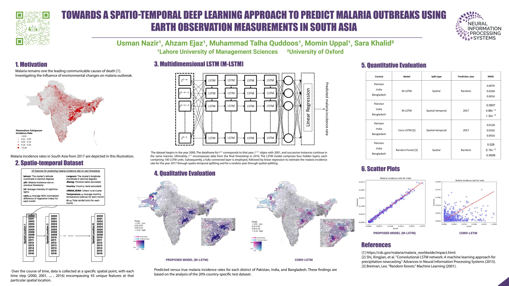

Predicting malaria outbreaks from space
Towards a spatio-temporal deep learning approach to predict malaria outbreaks using earth observation measurements in South Asia
About half the world’s population lives where malaria can spread. Knowing where it will strike next helps health workers get there first.
Mosquitoes that carry malaria do best in warm, wet, green places, and poorer communities are hit hardest. Satellites photograph all of these things, every year, for free.
We taught a computer model to read 17 years of satellite pictures and weather records for more than 32,000 places across Pakistan, India and Bangladesh. It then predicted how much malaria each district would have the following year. Its predictions were much closer to reality than an earlier AI method.
A low-cost way to estimate malaria risk district by district, built entirely from data that already exists.
The model combines freely available satellite measurements (night-time lights, vegetation, rainfall, temperature) with household-survey malaria records. It produces a malaria incidence estimate for every district in Pakistan, India and Bangladesh.
Tested on 2017, it tracked real incidence closely in India and outperformed an established deep-learning method in all three countries. The same approach can be applied to other diseases that are sensitive to climate. It is a step towards regional early-warning systems that let programmes position bed nets, spraying and staff ahead of rising risk.
A multi-dimensional LSTM (M-LSTM) that fuses 43 earth-observation and survey features per location-year to forecast district-level P. falciparum incidence.
Training data: 32,172 DHS locations (Pakistan 1,517 · India 28,395 · Bangladesh 2,260), 2000–2016, with monthly temperature, rainfall and NDVI, annual night-time lights (DMSP-OLS / VIIRS), location and previous-year incidence. The architecture has 4 LSTM layers × 100 units, then a fully connected layer and linear regression.
Evaluation: a spatio-temporal split (predict 2017) and a spatial 80/20 split, against Conv-LSTM (Shi et al., 2015) and Random Forest (100 trees). The paper reports an average 29.41% RMSE reduction versus Conv-LSTM. Code and data are public.
Malaria follows the climate, and the climate is changing
Malaria remains one of the leading infectious causes of death. Heatwaves, floods and droughts are making outbreaks harder to anticipate.
Half the world at risk
Around 50% of people live in places where malaria can spread, mostly in Africa and South Asia.
Patchy data
Case counts are often estimated from household surveys that are small, expensive and infrequent, so the true picture is easy to miss.
Many moving parts
Temperature, rain, vegetation and poverty all shape where mosquitoes breed and who gets sick. They interact differently in every region and every year.
Watch 18 years of malaria and climate unfold
Each red dot is a malaria hotspot. Press play or drag the slider to move through the years, and switch layers to see what the satellites measured beneath it.

Two ways to see the change
On the left, how malaria has fallen across the region year by year. On the right, pick a layer and slide across the map to compare the start of the study with its final year.
The trend line gives the regional direction of travel; the map shows the signals behind it. All of these signals are open, satellite-derived and refreshed every year, so the approach can be updated without new field surveys.
Left: mean P. falciparum incidence rate (PfIR) across surveyed locations in Pakistan, India and Bangladesh, with a projection beyond the study period. Right: Appendix B figures, DHS incidence overlaid on each earth-observation covariate for 2000 and 2017.
Malaria incidence in South Asia, 2000–2026
Mean P. falciparum incidence rate across surveyed locations, with the years beyond the study shown as a projection.
Illustrative figures — to be replaced with the final series
The landscape behind the trend
Drag the handle to compare the first and last year of the study, one satellite layer at a time.


Areas that are dark at night (lower income) carry more malaria.
Teaching a model to read the landscape over time
The model learns the way an experienced field officer might: it looks at how each place has changed year after year and spots the pattern that comes before malaria rises.
A four-layer, 100-unit-per-layer LSTM ingests 17 annual time steps of 43 features per location, followed by a fully connected layer and linear regression to output next-step incidence.
Gather
For every place, collect 43 measurements a year: monthly heat, rain and greenery, night-time brightness, location, and last year’s malaria.
Merge DHS incidence with AReNA covariates and DMSP-OLS/VIIRS night-time lights (digital number 0–63) per cluster.
Line up in time
Stack those yearly snapshots, from 2000 to 2016, into a timeline for each of the 32,172 places.
Batch per country: 18 time steps × 43 features per location (It−n = 2000 … It−1 = 2016).
Learn the pattern
A type of AI built for sequences (an LSTM) learns which changes tend to come before malaria goes up or down.
4 stacked LSTM layers × 100 units, chosen by ablation over depth (1–4), width (100/200) and epochs.
Predict
It then estimates the malaria rate for 2017 in every district, and we check that against what really happened.
Fully connected layer + linear regression output. Evaluated by RMSE and R² on held-out time (2017) and held-out space (20%).
How close did the predictions get?
We hid the real 2017 numbers from the model, asked it to predict them, and then compared. We also ran the same test on an earlier AI method (Conv-LSTM).
Accuracy was strongest in India, where there is far more data, and weaker in Pakistan and Bangladesh. In every country the new model beat the comparison method on the 2017 forecast.
Country-specific R² and RMSE for the spatio-temporal split (predicting 2017) and the spatial split (random held-out year), against Conv-LSTM and Random Forest baselines.


True vs predicted 2017 malaria incidence for each district (20% test set). Drag the handle to compare.
Reading the map
Each district is coloured by both the real malaria level and the predicted level. When the colours are purple, the prediction matched reality.
Bivariate choropleth: actual incidence on the pink axis, predicted on the blue axis. Diagonal (purple) cells indicate agreement. The zoomed inset shows the high-burden eastern-India cluster.
Look at eastern India. Our model paints the hotspot dark purple, meaning a correct match. Conv-LSTM shows more pink, meaning it missed districts where malaria was high.
How much of the real pattern each model captured
R² for 2017 predictions: 1 means perfect, 0 means no better than guessing the average.
Source: Nazir et al. 2023
Size of the prediction error
Lower is better. The scale is logarithmic because the errors differ by orders of magnitude.
Trained on 2000–2016, predicting 2017. M-LSTM had lower error than Conv-LSTM in all three countries.
Predicting places the model never saw (random 20%). Random Forest had lower error in India and Bangladesh, and M-LSTM was better in Pakistan.
Source: Nazir et al. 2023
Predicted vs actual, district by district
Each circle is a location. If a prediction were perfect it would sit exactly on the red line.




Implications for public health practice
Climate change is speeding up and worsening the spread of infectious disease. Forecasts at the district level turn that global threat into local, actionable information.
Earlier warning
District-level estimates can feed national and regional early-warning systems, helping programmes act before transmission peaks.
Better targeting
Knowing which districts are likely to rise helps direct bed nets, spraying, testing and staff to where they are needed most.
Reusable approach
The method needs no disease-specific assumptions. It can be adapted to other climate-sensitive infections such as dengue or cholera, and to other regions.
The people behind this study
Read, watch, reuse
-
Conference paper · NeurIPS 2023
Towards a spatio-temporal deep learning approach to predict malaria outbreaks using earth observation measurements in South Asia
Nazir U, Ejaz A, Quddoos MT, Uppal M, Khalid S · NeurIPS 2023 Workshop on Tackling Climate Change with Machine Learning -
Journal abstract · The Lancet Planetary Health
Predicting malaria outbreaks using earth observation measurements and spatiotemporal deep learning modelling: a South Asian case study from 2000 to 2017
Nazir U, Quddoos MT, Uppal M, Khalid S · The Lancet Planetary Health 2024; 8: S17

The whole study on one page
Presented at NeurIPS 2023: the motivation, the dataset, the model and every result on a single page. Click it to view full size.